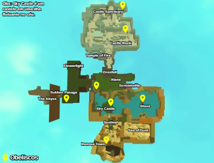

mapa do mundo
Sobre o mapa
O mundo de Rogue Lineage é cheio de lugares perigosos, misteriosos e únicos. Cada região tem seu próprio clima, inimigos e desafios. Você vai passar por florestas sombrias, desertos quentes, montanhas geladas e cidades cheias de gente forte.
Áreas do mapa
O mundo do jogo é vasto e repleto de lugares únicos, cada um com suas próprias características e segredos. Abaixo, você pode conferir algumas das regiões que compõem esse universo:
Royal Woods
"Uma presença sombria paira sobre um paraíso verdejante."
- Pode encontrar várias Dire Flowers.
- Um dos três locais onde Fallion (Treinador de Scholar) aparece, no Obelisco logo fora de Oresfall.
- Espelho do Cavaleiro Espectral, bem ao lado do local de aparecimento de Fallion.
Alana
"Um vento suave sopra através da árvore"
- Ranger (Vende espadas de Prata e Bronze por menos, mas Mythril por mais; dá madeira para missão da cadeira)
- Armadura de Ranger
- Comerciante
- Área escondida na árvore (pode conter planta de musgo e um amuleto)
- Médico
Sanguine Shrine
"Ao começar a sentir olhos nas suas costas, você percebe que esses corredores escuros exalam cheiro de sangue."
- 3 conjuntos de Armadura de Vampiro
- Treinador de Vampiro
- Espelho do Cavaleiro Espectral
Church of the Prince
"Um calor te envolve, seguido por uma estranha sensação de vazio."
- Armadura de Cavaleiro da Igreja
Scroomville
Longe do sol escaldante, os fungos da floresta crescem em abundância.
- Comerciante (É necessário ter a Fala dos Scroom; scrooms já nascem com ela)
- Engenheiro
- Médico (Também requer Fala dos Scroom)
- Caldeirão
- Ponto de nascimento dos Scroom
- Treinador de Druida
- Espelho do Cavaleiro Espectral
- Nota: Scroomville é conhecida por ter a trilha sonora mais relaxante de Rogue.
Oresfall
"Uma cidade de pedra guarda a passagem para as terras proibidas."
Missões:
- Mendigo (dá alinhamento orderly)
- Vendedor de Ídolos
- Garota Doente (dá chaotic ou orderly)
- Proteção contra Gelo (dá orderly)
NPCs e Locais:
- Caestus
- Armadura de Rogue
- Armadura de Assassino
- Encantador
- Lanças
- Treinador de Lutador de Arena
- Treinador de Ferreiro
- Velho (Tomo: primeira compra por 10 pratas, as seguintes são grátis)
- Eliwood (Habilidades de Treinamento de Lorde)
- Oficial de Recompensas
- Penhorista
- Loja de Espadas e Adagas (Não tem Adaga de Mythril, substituída por Caestus)
- Vendedor de Pedregulhos
- Banqueiro
- Lago
- Pode encontrar Tentáculos Estranhos (ingrediente usado para Poção de Crescimento Ósseo)
Central Sanctuary
"Entre as copas das árvores, um antigo salão do saber."
- Knight Captain Frey (Treinador de Sigil Knight)
- Library (Pegue o Tomo)
- Inn (Defina o ponto de renascimento, requer alinhamento Orderly)
- Missão Liquid Wisdom
- Loja de Espadas
- Comerciante
- Médico
- Caldeirão
Stranger's Grove
"An otherworldly feeling settles upon you."
Em dias de evento possuem ngc especiais por lá
Cardinal Crossing
"O vento fresco dá lugar ao calor cortante das areias."
Pode encontrar algumas Dire Flowers, Tellblooms e Strange Tentacles.
Wayside Inn
"A rest for weary travelers coming to and from the Emerald Shore."
- Vinifera (Bard Trainer)
- Innkeeper
- Doctor
- Illusionist Armor
Crypt of Kings
"A hidden grave for the fallen heroes of the past."
- Spawns five Shriekers at a time and locks the door if you take the loot or walk around the area of where they spawn.
- Can find multiple Crown Flowers.
- Cardinal Gate
- Skycastle Transporter
- One of the three Fallion (Scholar Trainer) spawns
Cardinal Gate – Portal Cardinal
- Skycastle Transporter – Transportador de Skycastle
- One of the three Fallion (Scholar Trainer) spawns – Um dos três spawns de Fallion (Treinador de Scholar)
Sentinel
"Lugar aonde freshie chora e a mãe não vê"
The Lunar Keep
"Um salão ancestral localizado dentro da Cidade das Portas."
- Pode-se obter Tomeless aqui.
- Therapist
- Doctor
- Library (Coleta de Tomes)
- Um dos três spawns de Fallion (Treinador de Scholar), localizado na Library.
- Rem (A bibliotecária que entrega o tome e também ensina o treinamento de Rem.)
- Banker
Sentinel Dungeons
"Muito abaixo de uma praça de mercado movimentada, os perversos pagam pelos seus crimes."
- Jafar (Treinador de Assassin)
- Bounty Officer (Usado para quests de Orderly)
Central Sentinel
"A joia do Lago Shiam resistiu a todas as tempestades."
- Mercador
- Lojas de espadas e adagas
- Dorgan (Carne e Carne Crua)
- Picareta
- Frigideira
- Treinador da classe Ferreiro
- Treinador da classe Samurai
Sea of Dust
"Far in the distance, a grim tower watches over the burning sands."
- Múltiplos spawns de Lava Flower.
Southern Sanctuary (ORDERLY)
"Hidden within the Sea's cracks, a refuge for the just and honorable."
- Comerciante
- Médico
- Issac (No topo da torre, também é o treinador de Monk.)
- Terapeuta (No topo da torre com o treinador de Monk.)
- Caldeirão na torre de Monk
- Missão Lachesis
- Estalagem (Define o spawn, Freshie spawn)
- Pode comprar Caestus por 15 pratas na torre de Monk
The Burial Grounds
"An ominous presence washes over you..."
- Drake (Treinador de Spy)
- Múltiplos spawns de Vile Seed.
- Ao ficar Tomeless, você será teleportado para cá.
- Ao terminar de correr Castle Rock, será teleportado para cá.
Paradiso
"A calm respite lays hidden betwixt the desert mountains."
- Spawn de Desert Mist.
- 2 spawns de trinket.
Tower on the Wall (ORDERLY)
"A mage's sanctuary nestled in the mountains."
- Estalajadeiro (Define o spawn, Freshie spawn)
- Barreira de Mago (Necessita classe Mage ou 2+ magias)
- Elevador para The Hidden Hall (Necessita Mage ou 2 magias aprendidas)
- Espelho do Wraith Knight
The Crack in the Wall
"A long forgotten smugglers route, once used by mages to escape the mad King of Sentinel."
The Hidden Hall
"A respite for those that embrace tithe."
- Túnel com múltiplas rotas
- Innkeeper
- Treinador de Illusionist
- Biblioteca (Pegar o Tomo)
- Médico
- Comerciante
Desert Ruins
- Tal (Pocket Sand)
Emerald Stone Tavern
"A cool escape from the unforgiving desert winds."
- Treinador de Warrior
- Engenheiro
- Caldeirão do lado de fora
- Spawns de Trote
Vincent's Speakeasy (CHAOTIC)
"A hideaway for thieves, brigands, and those of ill repute."
- Master Assassin (oposto das quests de recompensa)
- Sacola
- Vincent que vende Vint e Brodni.
- Spawns de planta Moss
The Giant's Staircase
"A winding path up the mountain carved in stone, one walked for centuries."
- Múltiplos spawns de Scroom
- Túnel Inacabado
Renova Town
"A small town nestles between the rocks, ready to replenish adventurers of black despondency."
- Fabiana (Treinadora de Thief)
- Treinador de Chef
- Médico
- Comerciante
- Caldeirão (Na cabana antes da cidade)
- Espelho do Wraith Knight (Na cabana abaixo)
- Estalajadeiro
- Oficial de Recompensas (A prisão em si não fica em Renova; entregar pessoas aqui as teleporta para a prisão em Sentinel Dungeons.)
- Missão repetível de Shrieker eye (caotic) do Vine
Everglow Cavern
"Light ripples across the walls of this interstice, providing a path to those in need."
- Treinador de Greatsword
- Glowshrooms (O termo “shroom” é censurado pela Roblox, então se usa “Glowscrooms”. “Schroom” não é mais censurado.)
The All-Dark
"A dark maelstrom of pure chaos rampages across the plane..."
- Treinador de Abyss Walker
- Mata qualquer não-Abysswalker instantaneamente ao entrar (ou por falha no teleporte)
Ardor’s Chaple
- Gharnef (Treinador de Necromancer)
- Brasão de fogo roxo (Usado na quest de Abyss Walker)
- Localização do esgoto (ponto raro de spawn de trinket)
- Ponto de entrada para The All-Dark
Tundra
"Terras geledas e vastas com perigo a espreita"
- Enibras (Abyss Walker Quest Giver)
- Reynauld (Orderly/Chaotic Quest)
- Eagle Statue (Castle Rock entrance)
Castle Sanctuary (ORDERLY/NEUTRAL)
"These warm halls are the last safe haven amidst the winter."
- Ultra Sigil Trainer & Sigil Helmet Quest
- Master Illusionist Trainer
- Ultra Spy Trainer
- Doctor
- Merchant
- Turnip Vendor
- Must give Draug a Howler Fang/Be a Sigil Knight in order to interact with any of the NPC's inside the Sanctuary.
- Banker
- Sigil Tower
- Mother of Whisperers
- Dragon Sage Armor
- Cauldron
- Obelisk
Mount Gelu
"Narrow bridges give way to an icy grave."
- Ragash Al'vul (Dragon Sage Trainer) (Monastic Stance required to get in if closed)
The Forgotten Sanctum
"Voices echo deep within this long forgotten cavern..."
- The Sanctum Spear (Church Knight, Deep Knight trainer)
- The Sleeping Snail (CHAOTIC) - "The only warm drink for miles."
- Master Assassin (Assassination Missions)
- Faceless Armor
- Doctor
- Innkeeper (Set Spawn)
- Obelisk
The Snowfields
"A frozen land best left forgotten."
- Ingredients (Creely, Snowshroom, Ice jar)
- Snap Magic NPC
Necromancer Church
- Charles (Master Necromancer Trainer)
- Wraith Knight Mirror
The Sealed Church (ORDERLY)
"A forgotten temple, frozen in time."
- Sealed Shrieker spawn
- Solan's Sword
Temple of Fire
"The flames below emit a strange welcoming glow."
- Lava Snake spawn
- Eslaf (Fire Pit NPC)
If you are planning on fighting the Lava Snake, read the guide linked.
Dragon Pit
- Ice Dragon (Dragon Slayer Quest)
Laboratory Sigma
"What could this place be doing here?"
- Lab Assistant (Construct)
Tallest Peak
- Big Hoss (Oni Trainer)
Castle Rock
"A laboratory Castle hidden deep beneath the ice."
- Castle Rock Lab
- Castle Rock Library
- Castle Rock Jails
- Castle Rock Gate Lava Room
Sleeping Forest
"Nenhuma luz atravessa o dossel desta floresta escura."
- Spawn de Zombie Scroom
Flowerlight Town
"Uma cidade outrora dedicada à dark diving, até o fechamento do Seal."
- Vendedor de Nabo
- Inn (Set Spawn)
- Loja de Espadas e Lanças
- Innkeeper/Loja de Pacotes de Corante (Também para a missão da flor no Sky Castle)
- Toilet hand (Missão Orderly) – Tag "Cursed" não pode mais ser dada para a mão.
- Tiger (Treinador Dragon Knight)
- Espelho do Wraith Knight
- Treinador Dragon Knight
Deepforest Sanctuary
"Um antigo local de descanso dos pastores da floresta."
- Médico
- Terapeuta
The Sunken Passage
"Uma área usada há muito tempo pelos Flowerlight Divers para treinar seus novos membros."
- Spawns de Evil Eye no caminho à esquerda
- Múltiplos spawns de Trinket e Acorn Light no caminho à direita
- Porta no final
- "Este selo de pedra está fechado há séculos, por que está se abrindo agora?"
Leva para The First Layer
The First Layer
"Você sente as energias assombradas do mal começando a enlouquecê-lo enquanto desce esses penhascos fétidos."
- Evil Eyes
The Last Bastion
"Uma vez uma fortaleza formidável da ordem, agora tomada pelas criaturas do Abismo."
- Treinador Shinobi
- Merrith (quest da porta do Wraith Knight)
The Rift
"No fim de um mundo, talvez ele também possa ser o começo de outro?"
- Ya'alda (teletransportador Khei)
The Temple of Altum
"Este templo oferece uma sensação indesejada de perigo."
- Soul Master (Treinador de Soul Snap)
- Spawns de Evil Eye
Hall of Mirrors
"Estes salões abrigam os Wraith Knights e servem como seu lugar de descanso."
- Eldin (Treinador Wraith Knight)
- Hub do Espelho do Wraith Knight
The Gem Sea
"Um belo mar cheio de perigos."
Isle of Eth
"Além das águas infestadas de tubarões, este humilde assentamento é admirado por muitos."
- Vendedor de temperos (Chef)
- Grendel (Treinador Alquimista)
- Ishikk (Treinador Marinho)
- Comerciante
- Spawns de Trote
- Golis (quest da Cadeira/Prata)
- Dockmaster (Usado para vender barcos)
Decaying Isle
"Algo não parece muito certo sobre este lugar..."
- Spawns de Trote
- Minério de Mithril
Emerald Shore
"As areias já brilhavam em um verde brilhante, mas perderam o brilho conforme o mar continuamente engole a costa."
- Dockmaster (Usado para vender barcos)
Castle in the Sky
"Um castelo do Plano do Vento entrou recentemente nesta dimensão."
- Treinador Dragon Slayer
- Roleta de pergaminhos (única maneira de adquirir certos godspells, chance aleatória)
- Trono para invocar membros da casa (desde que não estejam em combate)
- Missões Orderly/Chaotic
- NPC que teleporta você de volta para sua pousada